EL SISTEMA COMPLETO PARA CLONARTE CON IA
Esta guía transforma una simple selfie en un avatar que habla, se mueve y produce contenido todos los días sin que tú tengas que grabarte. Cada fase es estratégica. Si un paso falla, todo lo demás colapsa.
01 PASO 1 — CREACIÓN DEL ROSTRO (LA BASE DE TODO)
El rostro define si tu clon es creíble o no. Un retrato hiperrealista que conserve tu identidad exacta es lo que asegura consistencia en cada imagen, video y animación que crees después. Por eso se usan herramientas especializadas en preservación de identidad, micro-detalle de piel y calidad RAW fotográfica.
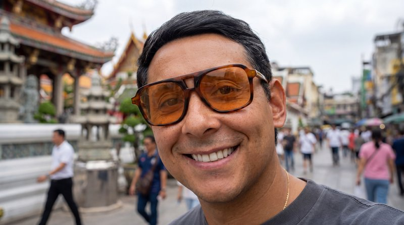
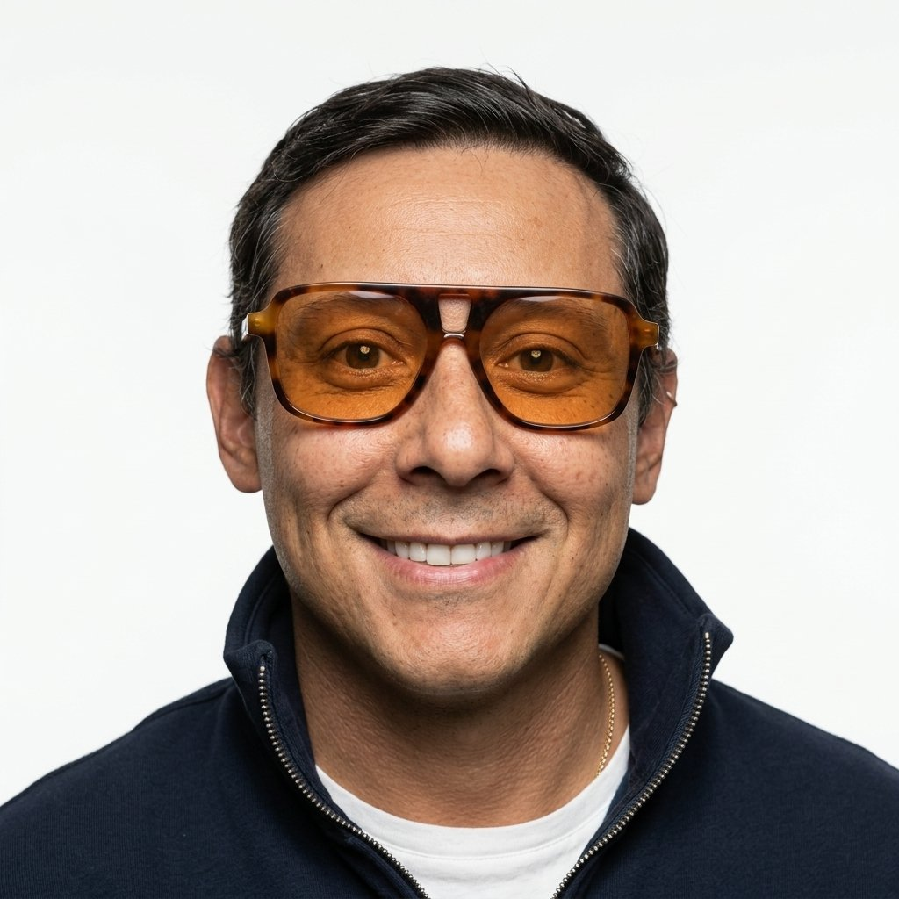
Opción A → NanoBanana Pro (Recomendada)
La más precisa para mantener tu identidad facial. Líder en exactitud de rostro, renderiza piel RAW fotorrealista y soporta múltiples ángulos.
"Retrato fotorrealista 85mm f/1.4 RAW de esta persona exacta, misma identidad, mismo cabello, mismas proporciones. Iluminación de estudio suave, fondo blanco limpio, micro-detalle alto con textura de piel real y poros. Preservar estructura facial con precisión."
Opción B → Flux 2.0
La más fuerte en realismo emocional. Simulación de iluminación cinematográfica, excelente con piel, poros y color sumamente natural.
"Crea un retrato hiperrealista de esta persona con iluminación suave cinematográfica, estética de profundidad 85mm, textura RAW, arrugas y poros naturales. Preservar identidad exacta con realismo HDR."
Opción C → Seedream 4
La más nítida para primeros planos (close-ups). Modelo de piel y textura súper fino, excelente para fotografía profesional cerrada.
"Genera un retrato frontal RAW con textura de piel fotorrealista, asimetría natural y claridad alta. Mantener identidad exacta, forma del cabello y geometría facial."
Opción D → ChatGPT 2
La más accesible para empezar. Integración nativa con generación de imagen en lenguaje natural. Rápida iteración si recién estás empezando.
"Genera un retrato hiperrealista de esta persona conservando identidad facial exacta. Estilo fotografía profesional 8K, iluminación de estudio, fondo neutro, alta nitidez en rostro y textura de piel real."
Consistencia Facial en Múltiples Poses (Paso 1 Flow)


Por qué este paso es crítico
Si la identidad falla en la base, todo el clon falla. El video, la voz, el contenido de autoridad —todo depende de un rostro consistente y creíble.
02 PASO 2 — CONSTRUIR TU DATASET VISUAL
Una sola foto no alcanza. Necesitas entre 10 y 20 imágenes del mismo rostro clonado en distintas poses, outfits, ángulos y escenarios. Una sola imagen se ve tiesa. Un dataset le da flexibilidad a tu clon: escenas caminando, hablando, gesticulando, en distintos moods. Y eso también aumenta tu presencia de autoridad, porque la gente te ve en múltiples contextos.
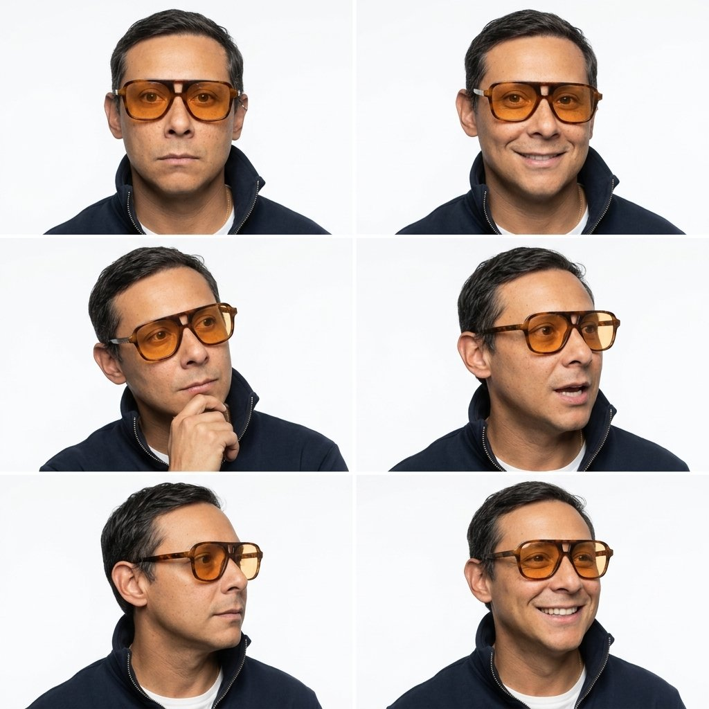
"Plano medio fotorrealista de esa persona caminando naturalmente, misma identidad y proporciones. Tomado con lente 50mm en exteriores, luz natural suave, movimiento real de tela, sombras limpias."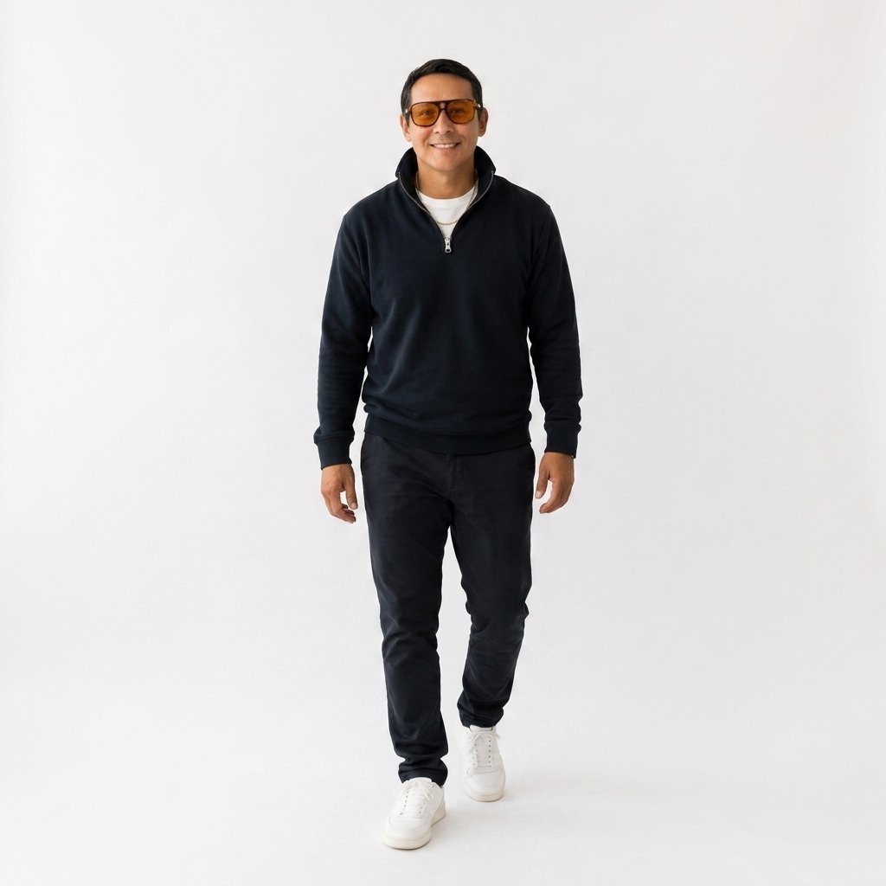
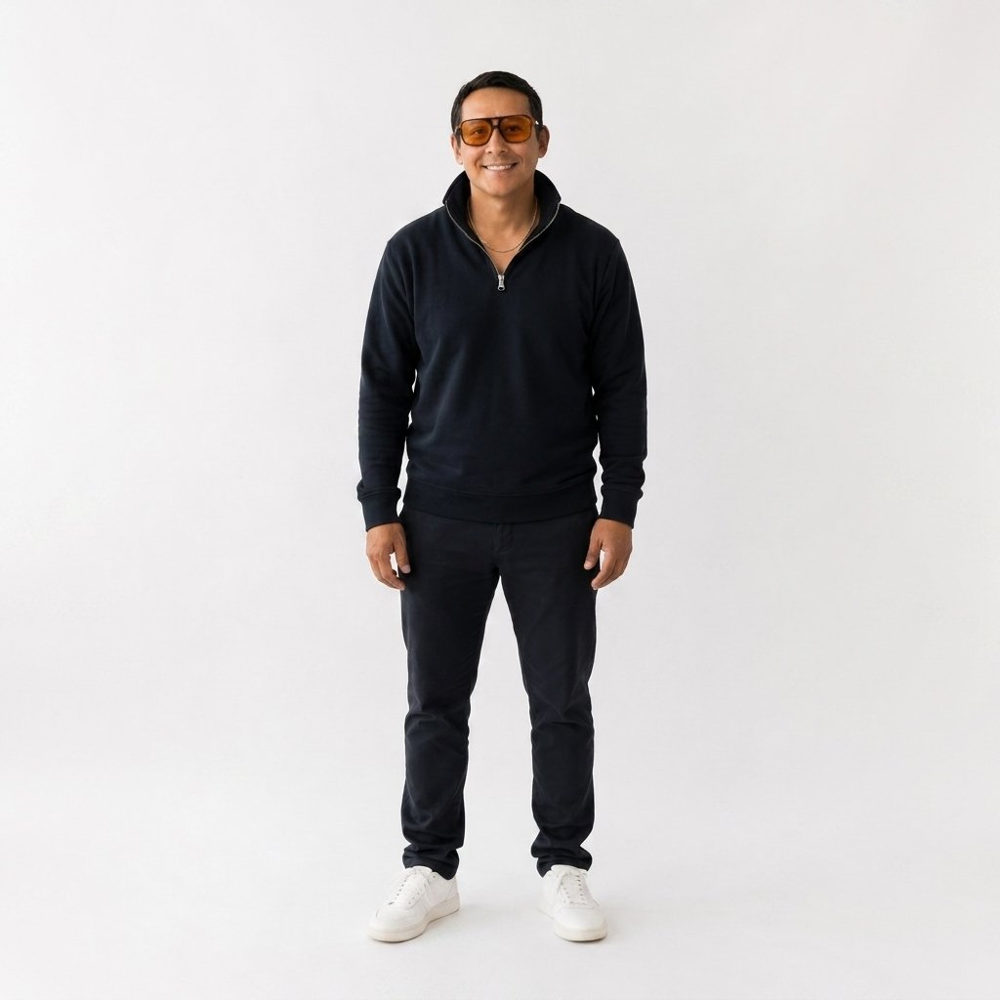
Variaciones que tu dataset debe incluir:
- — De pie / sentado / caminando
- — Sonriendo / serio / hablando
- — Outfit casual / oficina / elegante
- — Ángulos: frontal, ¾, perfil
- — Interior y exterior
Por qué este paso es crítico
Sin variedad, tu clon va a parecer una foto estática repetida. Con dataset, parece una persona real con vida.
03 PASO 3 — ESCALAR A 4K–8K (NO NEGOCIABLE)
Este paso es lo que separa el contenido amateur del que parece campaña real. Sin resolución 4K+, las herramientas de movimiento generan artefactos, pixelado y se nota la IA al instante. Upscaling mejora textura de piel, elimina ruido y da claridad cinematográfica.
Visualizador de Textura Facial (Antes vs Después 4K)
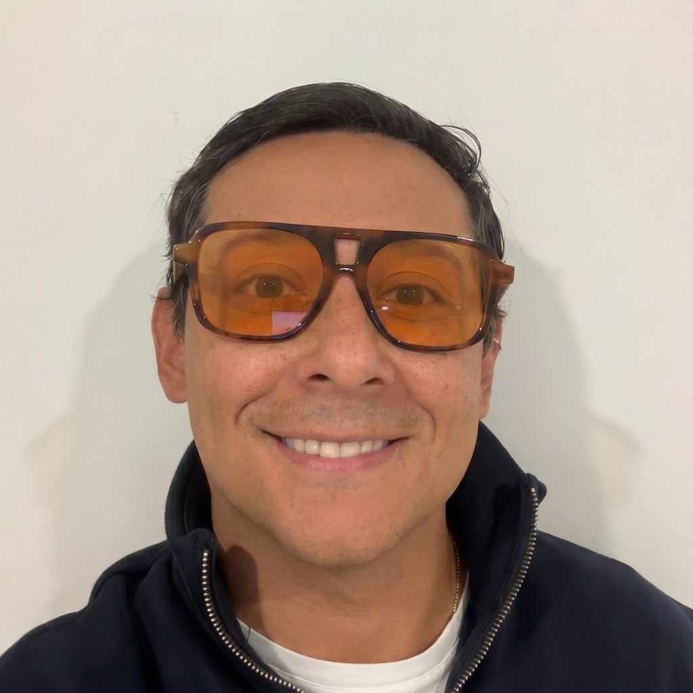
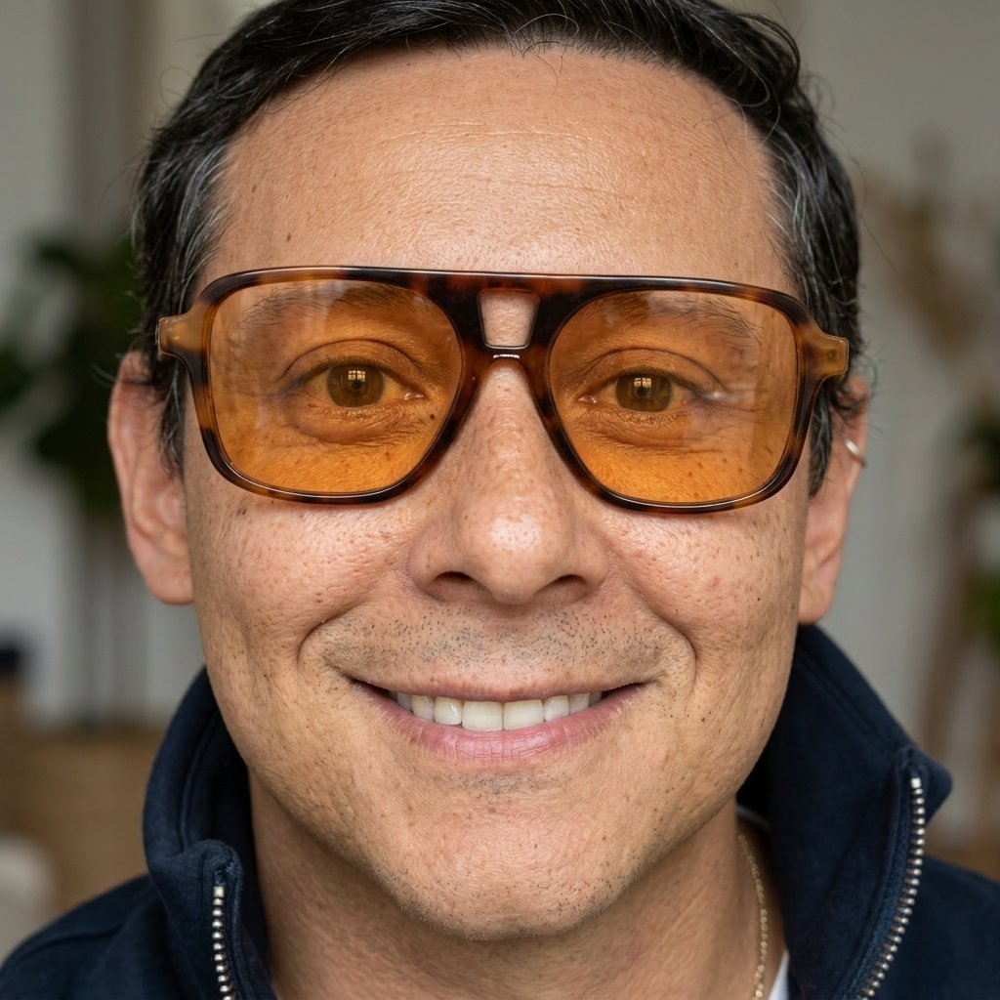
Rápido, balanceado, buena claridad general.
Detalle ultra. Insuperable para poros y textura.
El más realista. Diseñado específicamente para rostros humanos.
El más versátil. Integra upscale con flujos de trabajo completos en lote.
Subir imagen → elegir x4 o x8 → activar modo detalle → exportar en PNG 4K–8K.
Por qué este paso es crítico
Saltarse este paso es la razón #1 por la que el contenido se ve "hecho con IA". Hacer este paso es la razón #1 por la que el contenido se ve hecho por una agencia.
04 PASO 4 — CLONAR TU VOZ
La voz es el alma de tu avatar. Sin voz propia, no eres tú: es un robot. Las herramientas de clonación replican tu tono, tu respiración, tus pausas, tu emoción. Una voz clonada bien hecha es lo que hace que la gente te crea —y lo que activa la autoridad.
Opción A → ElevenLabs
El estándar absoluto de la industria. Replica acento, respiración, micro-pausas naturales, calidad de estudio y soporta más de 30 idiomas.
Opción B → Hedra Voice
Para clones de sincronización directa en video. Combina voz + sincronización de boca en tiempo real, ideal para talking-heads.
"Clonar esta voz con claridad cálida y media-grave, micro-pausas naturales, acento limpio, respiración suave y ritmo articulado. Preservar tonalidad emocional para tutoriales y estilo de conversación profesional."Por qué este paso es crítico
Una imagen sin tu voz es un avatar genérico. Tu voz es lo que hace que el contenido sea tuyo —y lo que hace que las marcas paguen.
05 PASO 5 — IMAGEN A VIDEO (MOVIMIENTO)
Aquí es donde tu imagen estática se vuelve un video real. Las herramientas interpretan el rostro, el cuerpo y el entorno para crear movimiento natural.
Escenarios Generados y Renders de Consistencia (Paso 5)
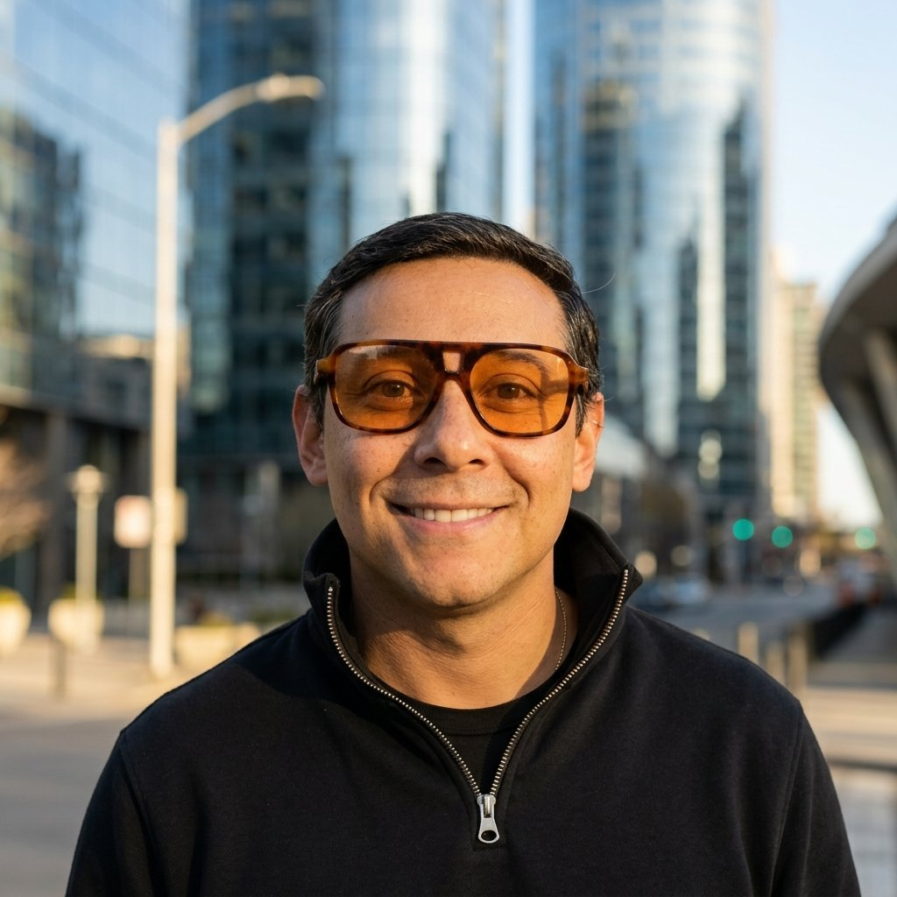
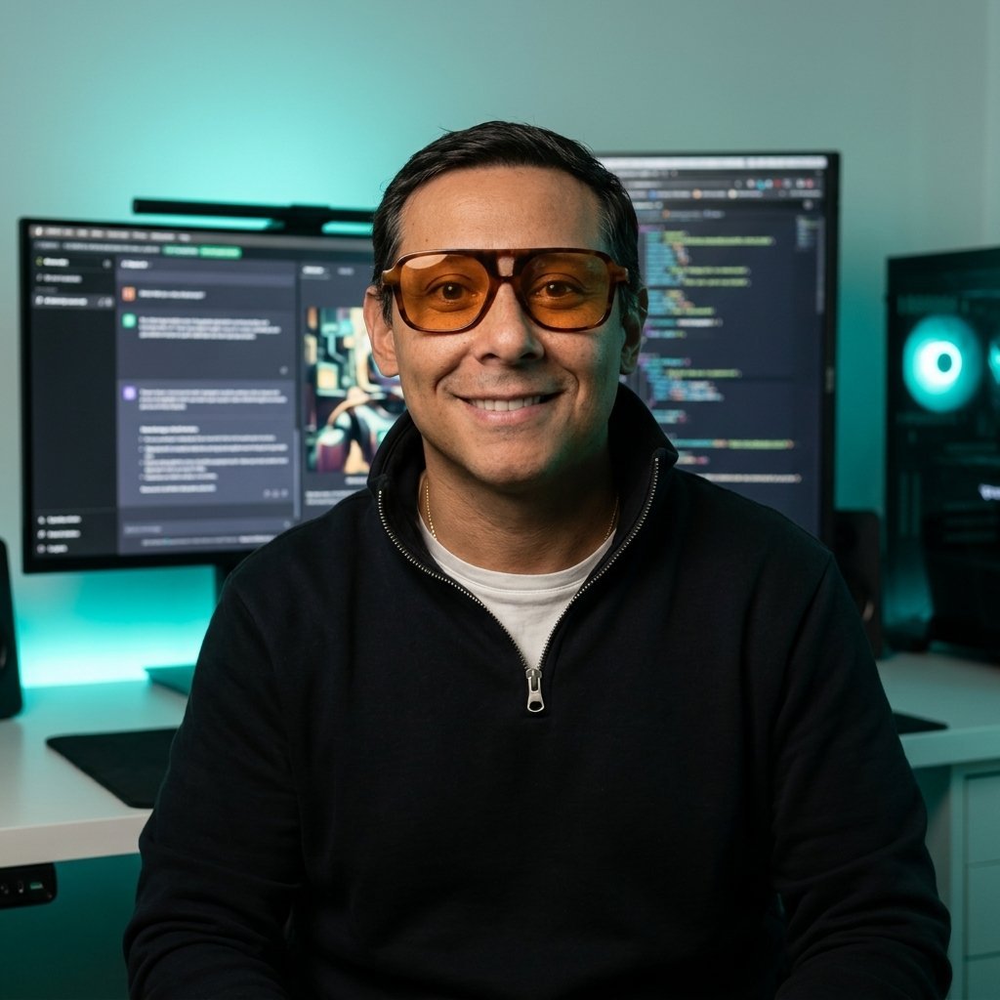
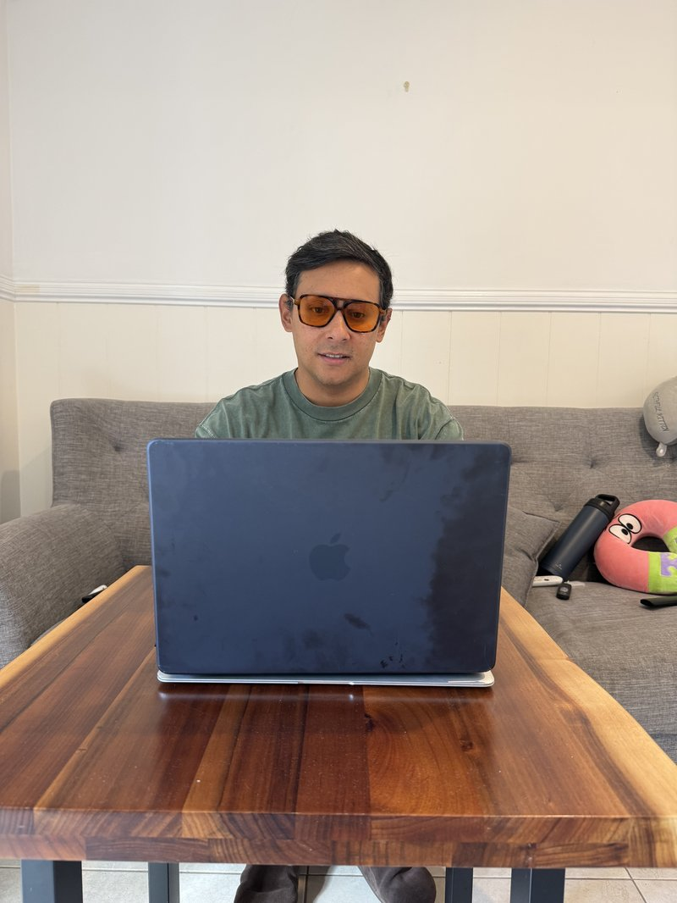
Opción A → VEO 3.1
La mejor para campañas cinematográficas. Control total por JSON, movimientos multi-capa y control fino de luz, entorno y física.
{"description": "Sujeto de pie con movimiento suave y giro sutil de cabeza.", "camera": "dolly lento", "lighting": "luz clave difusa suave", "subject_behavior": {"movement": "respiración suave"}}
Opción B → Kling AI
La más fácil para movimiento humano natural. Giros de cabeza, parpadeos y caminar sumamente fluidos con fondos estables.
"Movimiento cinematográfico con lente 35mm. Parpadeo natural y movimiento sutil de cabeza, ligero movimiento de hombros, postura calmada. Fondo con parallax. Emoción cálida, confiada, humana."
La más realista para movimiento corporal completo. Excelente para escenas largas de avatar de cuerpo entero interactuando.
El más limpio para movimiento sutil. Sincronización facial labial precisa y micro-expresiones para videos educativos.
Por qué este paso es crítico
Movimiento mediocre = se nota la IA al instante. Movimiento bien hecho = la gente jura que eres tú grabándote.
06 PASO 6 — ENSAMBLAGE FINAL (TU MÁQUINA DE CONTENIDO)
Exportas el video animado → sincronizas la voz → agregas subtítulos → publicas. Repites el proceso de forma programada. Tu clon se convierte en una máquina de contenido diaria sin que tú salgas en cámara ni una sola vez.
Demostración de Interacción UGC (El Santo Grial)
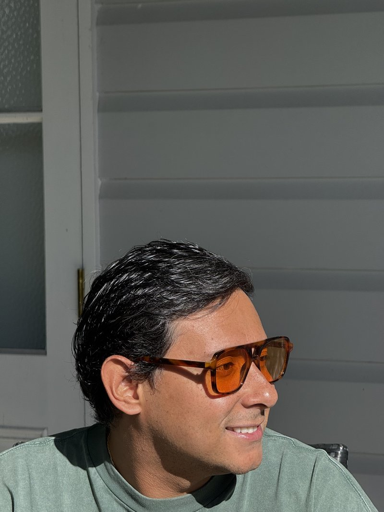
Interacción Física de UGC con Producto Real
- Jose sosteniendo un suplemento premium hacia la cámara.
- Manos de IA perfectas con textura de piel uniforme.
- Fondo de cocina realista con luz natural de mañana.
- Consistencia facial del personaje 1:1 conservada con total naturalidad.
Cada paso construye sobre el anterior
Pasos débiles rompen la ilusión. Pasos fuertes crean un clon perfecto que las marcas están deseosas de contratar.